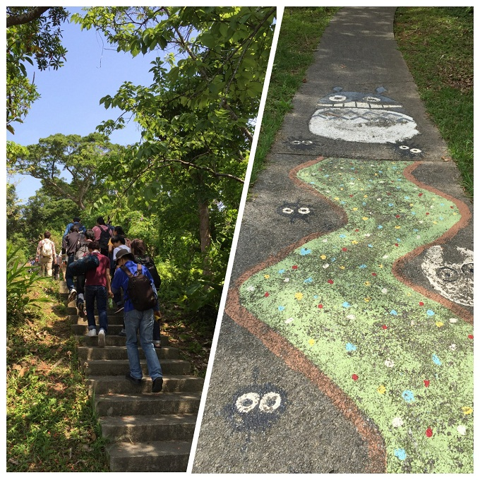
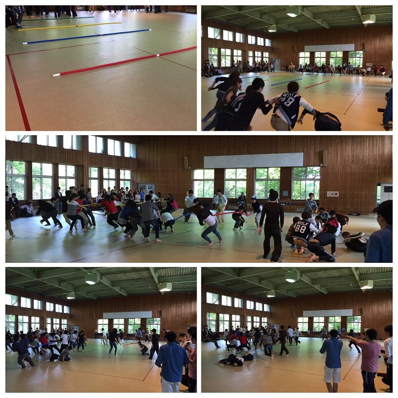
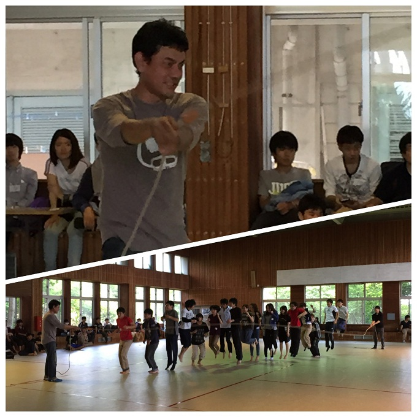
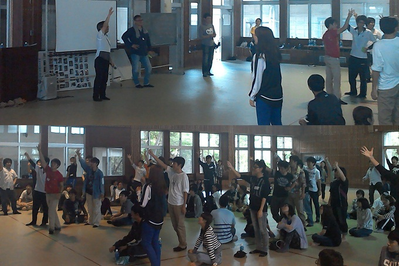
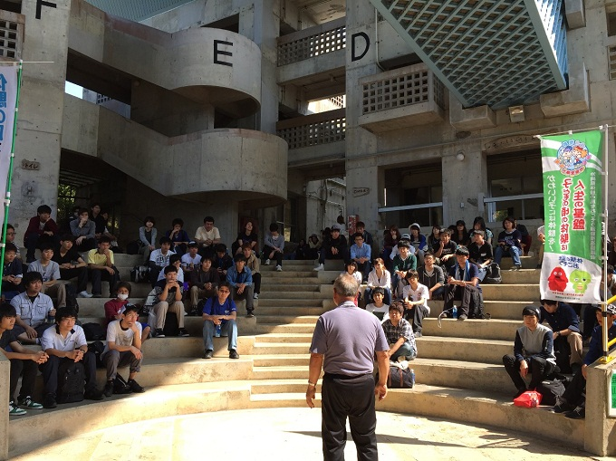
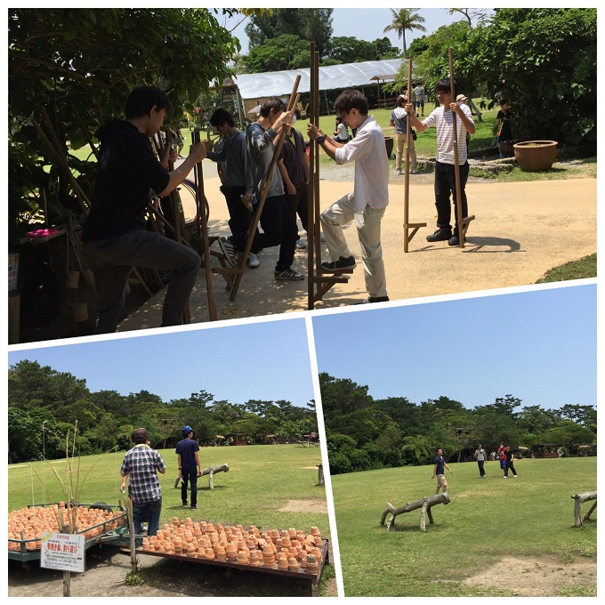

メンバーシップ・トレーニング（MT）を開催しました
産業情報学科では以下の目的のもとに石川青少年の家において5月1日～2日の1泊2日でメンバーシップ・トレーニング（1年次ゼミによる合同学外ゼミ）を開催しました。
・「産業情報学科の同期入学者、先輩、教員と懇親をはかり不安を解消すること」
・「懇親を通して、高校と大学の違いを理解し、大学生活をどう過ごすべきかを考えること」
参加した新入生らはレクを通して親睦を深めることができただけでなく、教員・先輩らとの話を通して不安や心配事が解消されたことでしょう。また、学科メンバーでレク、食事、宿泊と一緒に過ごしたことで産業情報学科としてのメンバーとしての意識を高め、これからの大学生活を有意義に過ごせるきっかけになったものと思われます。
1日目（5月1日）：
学科教員を含め参加者は大学に集合後、バス4台にて石川青少年の家に向かいました。
到着後、駐車場から坂を上り大研修室に移動。午前中のオリエンテーションでは石川青少年の家所長の新屋様からお話を頂き、その後、ゼミごとに分かれ自己紹介を含むグループワークを行いました。

午後からは学科教員、学生同士の親睦を深めることを目的に室内レク、室外レクを開催。室内レクでは1年次ゼミ対抗で「5色綱引き」「大縄跳び」を行いました。
5色綱引きは床に並べられた5本の綱を合図と同時にダッシュで取りに行き、自陣に3本以上引き寄せたチームが勝ちとなります。5本全部を奪取するのは難しいため、事前に「どの綱を取るか/取らないか」「人数の割り当てはどうするか」の作戦と、状況に応じて綱を選ぶ臨機応変の対応が必要になります。

大縄跳びでは「並び方はどうする?」「縄を回すタイミングはどうする?回す速さはどうする?」などゼミ教員と学生同士で相談しながら頑張りました。

「5色綱引き」と「大縄跳び」の結果を点数化し総合得点を出したところ、大井ゼミが圧倒的な強さで2位以下を大きく引き離し優勝しました。優勝したゼミ生には賞品が授与されました。
また、学科長とのじゃんけん大会も開催され、1年次だけでなく学外ゼミのサポートにきている学科先輩、教員も含め大変盛り上がった室内レクでした。

夕食後の室外レクは施設が提供しているナイトウォークにチャレンジ。長そで、長ズボン、首にタオルを巻き両手に軍手と重装備をし、明かりは小さなペンライトのみを持ってコースにでました。ちょっとした山道を小グループのメンバーで探検することで自然観察もでき大変楽しく、有意義なものでした。
2日目（5月2日）：
朝食後、施設内を清掃し中広場でオリエンテーションを行い、施設を後にしました。

ビオスの丘、おんな道の駅を経由して大学に戻りました。
ビオスの丘では遊具で遊ぶ人、のんびりと施設を見て回る人、湖水観賞舟、水牛車に乗る人など、それぞれ亜熱帯の自然と触れ合い楽しみました。ビオスの丘を楽しんだ後は、おんな道の駅で昼食をとり大学に戻りました。

産業情報学科のメンバーシップ・トレーニングにおいて教員はバスや施設の手配を行い、学生間の親睦を深めるためのレクレーションは3、4年次のサポートスタッフを中心に行いました。1年次はレクの間だけでなく、食事の時間や休憩時間などで学科先輩、教員と話すことができ、今回のメンバーシップ・トレーニングの目的である「産業情報学科の同期入学者、先輩、教員と懇親をはかり不安を解消すること」「懇親を通して、高校と大学の違いを理解し、大学生活をどう過ごすべきかを考えること」が達成されたものと思われます。また、学科メンバーでレク、食事、宿泊と一緒に過ごしたことで産業情報学科としてのメンバーとしての意識を高め、これからの大学生活を有意義に過ごせるきっかけになることでしょう。